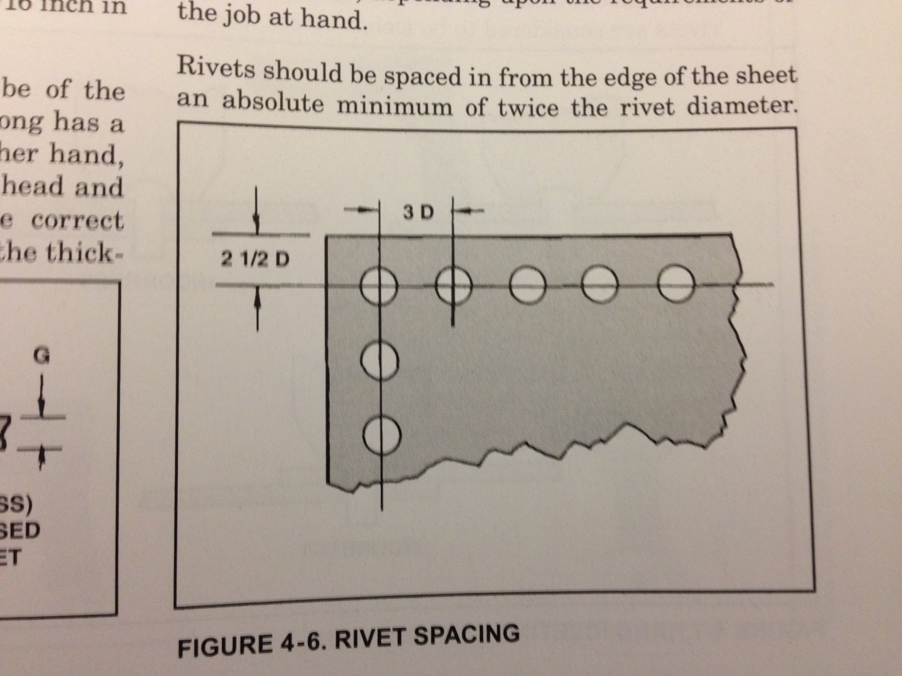
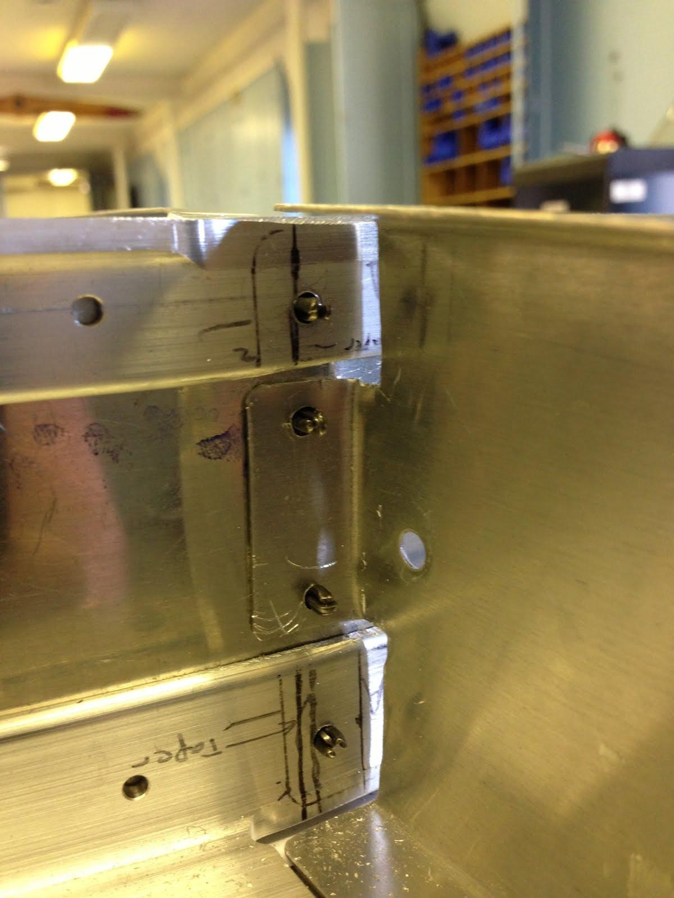
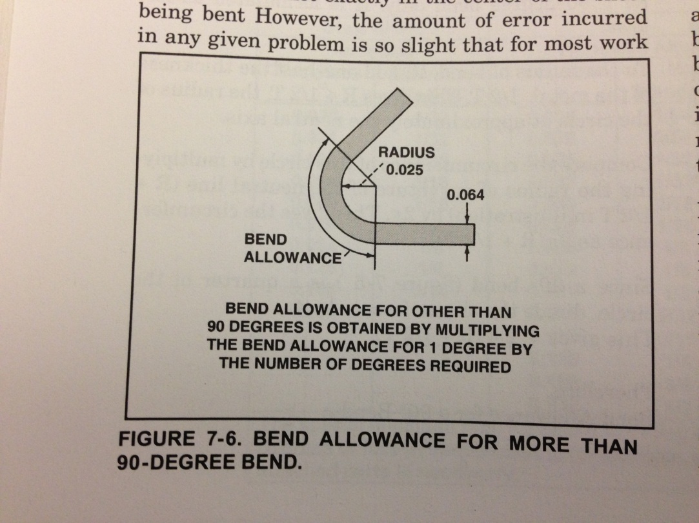
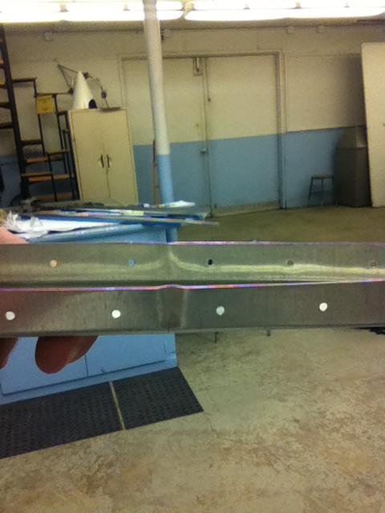
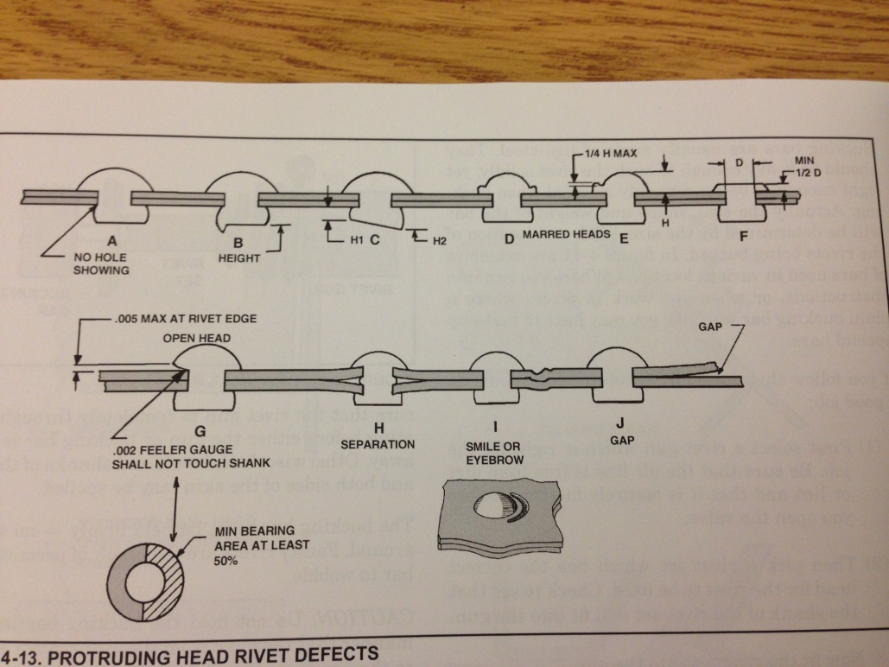
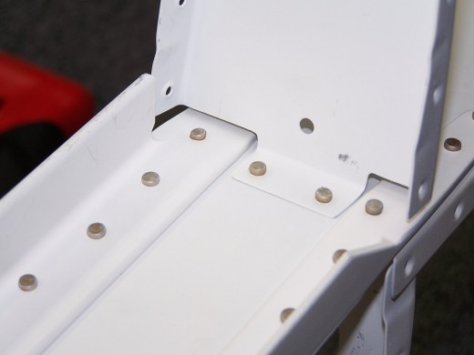
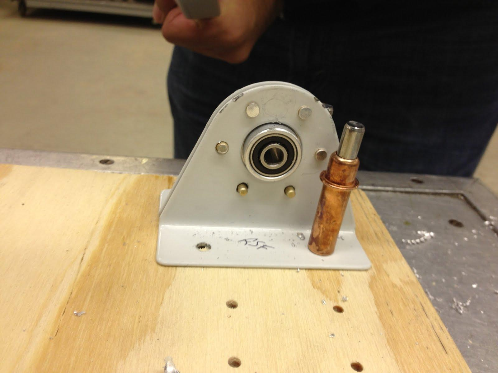
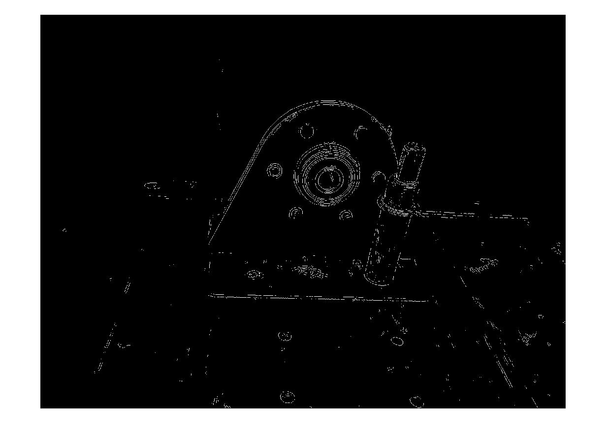
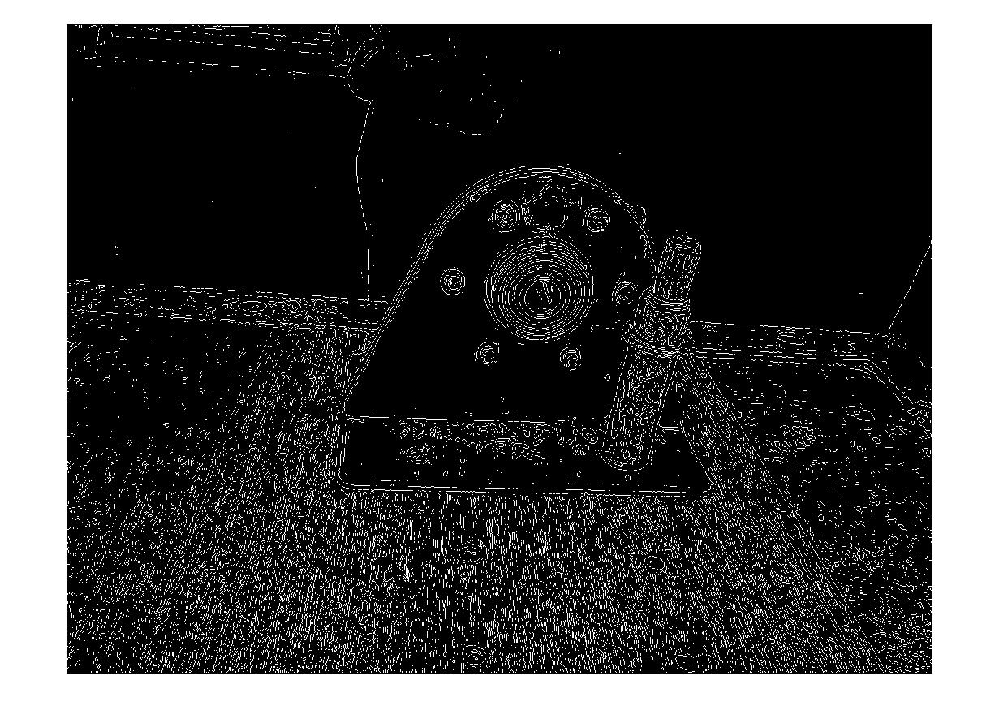

Computer Aided Manufacturing and Training is a foray into the world of quality control
using computer vision to quickly and objectively check the construction being performed.
This project involves developing a method to capture images of completed aircraft parts in such a way that
they would be decipherable by a computer. This transformation of images to data will need
to be developed along with a logic engine that could then use the data to determine if the
parts match tolerances given by the manufacturer.
This project would run side by side with aircraft construction and its primary goal is
assuring quality in some aspect of the build. The four aspects we will start with are distance and measurement correction, bend radius and angle
measurement, planar judging, and rivet analysis through geometry.
This project has ground shaking implications for both industry and everyday life. This technology
is currently primarily applied to aviation and automobile manufacturing, but the technology easily
extrapolates to many industrial automation and inspection procedures. Why outsource manufacturing when
new technology can undercut those costs with perfect accuracy?
Since the project is as simple as creative combinations of edge detection, data analysis, and
system modeling; the methodology is extremely adaptable to alternative tasks, environments,
and applications. The three major areas we see our project most relevant to are Industrial
Automation and Inspection, Object Recognition, and Real Time Object Tracking.
Distance and measurement correction applies build specifications such as hole punching and drilling placement. For example a set of holes on a piece of sheet metal spaced exactly 3mm apart with 5mm of separation from the sheet's edge as shown below.
If you notice the two holes attached to the rib (the right piece of metal in the picture below), the distance from the outer edge of the hole to the outer edge of the surface it lies upon is relatively close. There are structural concerns with any hole which is closer than 2 diameters from the edge. There are variances based on thickness of the sheet metal.
While working with sheet metal, a precise bend radius or angle between two planar sheets is commonly needed. The example shown below is not going to be the most common use, but there will be applications for judging the radii of cuts such as this.
An example of this can be seen below. There are three pieces in the bottom half of the picture. The centermost has been bent on each end to approximately 6 degrees from the horizontal. The left and right parts (spars) have been bent to accommodate this bend, again at 6 degrees from the horizontal. The method used for creating accuracy here involves similar triangles and tracing, obviously less than ideal.

During the manufacturing process, ribs are typically bent from their primary plane by a small margin. As the holes for the skins have already been cut, the ribs are needed to be perfectly planar (aka flat). An example can be seen below of what is used to repair this. This process is known as “fluting,” and basically bends the material into shape using the flange of the rib. Placement of this flute should be at the local maxima of the deviation from the planar surface, yet also needs to be spaced between holes.
As seen below, there are many ways placing a rivet can go awry. However, rivet imperfections are easily seen and easy to model geometrically. Lucky for us, these imperfections have been heavily analysed and well documented by industry and our tolerances are all well established.
Rivets can be checked actively during assembly or with static images, such as the one below.
The first step to achieving any of the goals of the computer vision project is mastering edge detection. The CV group in SAB has been working to come up with more sophisticated image processing methods. Starting with any raw image, code run in Matlab strips away all of the overlaying features (i.e. colors, textures, etc.) in a picture and leaves only the edges. This process is a subjective one and very sensitive to the intensity of an edge. The sharper an edge appears the easier it is to pick up, and similarly, subtle edges are hard to detect. Subtle edges can be more easily detected if the search parameters are generalized, however this can lead to false positives and increased background noise.
We've taken the above image and processed it with our CV code. The results are as follows:
Set with a low sensitivity, the more prominent edges in the image remain, and exclude many of the softer edges. Note the lack of the person in the background. If we were to increase the sensitivity for edges, we get the following:
Now we get almost all of the 'proper' edges in the picture. However, we also get several unwanted effects. The higher sensitivity for edges now picks up on the grain of the wood and the texture set into the cleco. These additional features would be considered unwanted noise in the scheme of our analysis.
Taking image processing to the next step in the needs of the computer vision group, we need to get data out of our images instead of just lines. For our purposes, the easiest way to get our numbers is to include a reference marker. The airfoil below includes a black and white reference frame with premeasured dimensions.
Running the image in Matlab (hover over image to view result), we can clearly see the reference frame separate from the rest of the airframe. The reference marker is used to establish a relationship between physical distance and pixels in the image. From that relationship, other unknown distances in the image can be calculated (the distance between rivet holes, for instance).